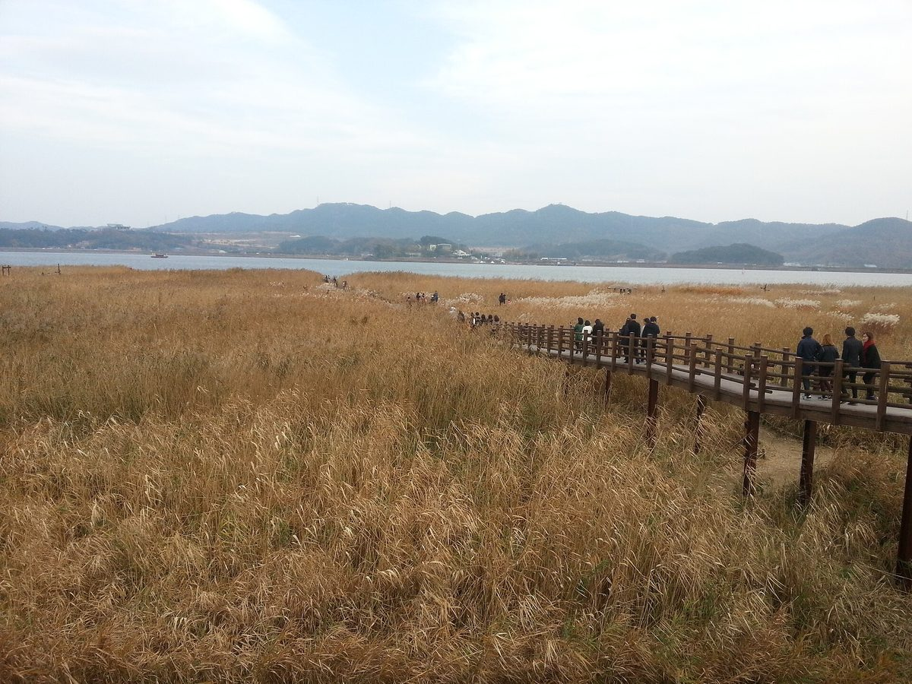

서천군의회, 농어촌 기본소득 지원·기금 조례 의결…기금 쓰임새에 '주민 수익형 재생에너지 사업' 넣어

의원 발의 조례 2건 원안 가결, 기본소득은 지역화폐로 주고 기금은 2031년 말까지 일반회계 전입금·운용 수익금·기부금으로 꾸려…지급액·대상 규모·지급 개시일은 아직 정해지지 않아
충남 서천군의회가 농어촌 기본소득을 줄 수 있는 근거와 이를 뒷받침할 기금을 함께 조례로 만들면서, 기금을 쓸 수 있는 곳에 '주민 수익형 재생에너지 사업'을 넣었다. 군의회는 10월 30일 제348회 임시회 제1차 본회의에서 최애순 의원 외 5명이 낸 '서천군 농어촌 기본소득 지원에 관한 조례안'과 김재민 의원 외 5명이 낸 '서천군 기본소득 활성화기금 설치 및 운용 조례안'을 입법정책위원회 심사를 거쳐 이의 없이 원안대로 의결했다. 지원 조례는 예산 범위 안에서 기본소득을 지역화폐로 지급하도록 하고, 지급 대상·규모·시기와 재원 마련 방안을 담은 기본계획 수립, 시범사업과 실태조사·연구용역, 자격이 바뀌거나 부정수급이 드러났을 때의 지급 중지·환수, 주요 사항을 심의하는 군위원회와 대상자 자격을 확인하는 읍·면위원회 설치를 규정했다. 2031년 12월 31일까지 두는 기금은 일반회계 전입금과 기금 운용 수익금, 기부금 등으로 채우며, 기본소득 지원과 시범사업 말고도 주민 생활서비스, 주민 수익형 재생에너지 사업, 공동체 회복 사업에 쓸 수 있고, 별도 계좌로 지정 금고에 맡겨 기금운용심의위원회가 운용계획과 결산, 성과를 심의한다. 다만 실제로 얼마를 누구에게 언제부터 줄지는 아직 정해지지 않아, 앞으로 세울 기본계획과 예산, 기금 운용 방식이 이번 조례가 주민 살림에 닿을지를 가르게 된다.
시민에너지 관점
기금 재원이 일반회계 전입금에 기대는 한, 기본소득은 해마다 군 예산 사정에 따라 늘었다 줄었다 하는 보조금에 머물고, 존속기한인 2031년이 오면 기금과 함께 멈출 수도 있다. 재생에너지 수익으로 기본소득을 채운다는 말이 결국 외지 사업자가 내놓는 지원금을 받아 나누는 일로 끝나지 않을까 하는 걱정도 나올 수 있지만, 코펜하겐 앞바다 미델그룬덴 해상풍력의 발전기 20기 가운데 절반을 시민 협동조합이 가지고 있듯 주민이 발전소의 주인이 되면 수익은 남이 주는 몫이 아니라 스스로 버는 소득이 된다. 알래스카가 1982년부터 자원 수입을 쌓은 영구기금에서 해마다 주민에게 배당을 주고 있는 것처럼, 기금이 오래 가려면 쓰는 돈만이 아니라 스스로 불어나는 자산을 품어야 한다. 서천군은 기본계획을 세울 때 '주민 수익형 재생에너지 사업'을 기금이 돈을 대 주는 사업 목록에 그치게 하지 말고, 주민이 출자해 함께 소유하는 발전소의 수익이 다시 기금으로 들어오는 구조부터 설계해야 한다.
출처: 뉴스세상 2026-11-01 류신 원문 보기
舒川郡議会、農漁村基本所得の支援・基金条例を議決…基金の使途に「住民収益型再生可能エネルギー事業」を盛り込む
議員提出の条例2件を原案可決、基本所得は地域通貨で支給し、基金は2031年末まで一般会計繰入金・運用収益・寄付金で運営…支給額・対象規模・支給開始日はまだ決まっていない
韓国・忠清南道の舒川（ソチョン）郡議会が、農漁村基本所得を支給できる根拠と、それを支える基金を条例でそろって定め、基金の使途に「住民収益型再生可能エネルギー事業」を加えた。郡議会は10月30日の第348回臨時会第1次本会議で、チェ・エスン議員ら6人が提出した「舒川郡農漁村基本所得支援に関する条例案」と、キム・ジェミン議員ら6人が提出した「舒川郡基本所得活性化基金の設置及び運用条例案」を、立法政策委員会の審査を経て異議なく原案どおり議決した。支援条例は、予算の範囲内で基本所得を地域通貨で支給するとし、支給対象・規模・時期と財源確保策を盛り込んだ基本計画の策定、モデル事業と実態調査・研究委託、資格の変更や不正受給が判明した場合の支給停止・返還、主要事項を審議する郡委員会と対象者の資格を確認する邑・面委員会の設置を定めた。2031年12月31日まで置かれる基金は、一般会計からの繰入金や基金の運用収益、寄付金などを財源とし、基本所得の支援とモデル事業のほか、住民生活サービス、住民収益型再生可能エネルギー事業、共同体回復事業にも使えるようにし、別口座で指定金融機関に預け、基金運用審議委員会が運用計画と決算、成果を審議する。ただ、実際にいくらを誰にいつから支給するかはまだ決まっておらず、今後策定される基本計画と予算、基金の運用方法が、今回の条例が住民の暮らしに届くかどうかを左右することになる。
市民エネルギーの視点
基金の財源が一般会計からの繰入金に頼る限り、基本所得は毎年の郡の予算事情で増えたり減ったりする補助金にとどまり、存続期限の2031年が来れば基金とともに止まるおそれもある。再生可能エネルギーの収益で基本所得を賄うといっても、結局は外部の事業者が出す支援金を受け取って配るだけで終わるのではないかとの懸念も出るだろうが、コペンハーゲン沖のミデルグルンデン洋上風力で風車20基の半分を市民協同組合が所有しているように、住民が発電所の持ち主になれば、収益は他人から与えられる分け前ではなく、自ら稼ぐ所得になる。アラスカが1982年から資源収入を積み立てた永久基金から毎年住民に配当を出しているように、基金が長く続くには、使うお金だけでなく自ら増えていく資産を抱えなければならない。舒川郡は基本計画を立てる際、「住民収益型再生可能エネルギー事業」を基金が資金を出す事業リストにとどめず、住民が出資して共に所有する発電所の収益が再び基金に入る仕組みから設計すべきだ。
出典: ニュースセサン（News Sesang） 2026-11-01 リュ・シン 原文を読む
舒川郡议会通过农渔村基本收入支援与基金条例…基金用途纳入居民收益型可再生能源项目
两项议员提案条例按原案通过，基本收入以地区货币发放，基金至2031年底由一般会计转入资金、运营收益和捐款组成…发放金额、对象规模和开始发放日期尚未确定
韩国忠清南道舒川郡议会以条例同时确立了发放农渔村基本收入的依据和为其提供支撑的基金，并把居民收益型可再生能源项目列入基金用途。郡议会10月30日在第348届临时会第1次全体会议上，经立法政策委员会审查，无异议按原案通过了议员Choi Ae-soon等6人提出的《舒川郡农渔村基本收入支援条例案》和议员Kim Jae-min等6人提出的《舒川郡基本收入活性化基金设置及运用条例案》。支援条例规定在预算范围内以地区货币发放基本收入，并要求制定包括发放对象、规模、时间和财源筹措方案在内的基本计划，同时规定了试点项目和实况调查、研究委托，资格变更或查出违规领取时的停发与追回，以及设立审议主要事项的郡委员会和确认对象资格的邑面委员会。基金存续至2031年12月31日，资金来自一般会计转入资金、基金运营收益和捐款等，除基本收入支援和试点项目外，还可用于居民生活服务、居民收益型可再生能源项目和社区恢复项目；基金以独立账户存入指定金库，由基金运用审议委员会审议运用计划、决算和运营成果。不过，实际向谁、从何时起发放多少尚未确定，今后制定的基本计划、预算和基金运用方式，将决定这次的条例能否真正惠及居民生活。
市民能源视角
只要基金财源依赖一般会计转入，基本收入就只能是随郡财政状况年年增减的补贴，到了2031年存续期限，还可能随基金一同终止。有人会担心，用可再生能源收益充实基本收入，最终不过是领取外来开发商拿出的补助再分发下去；但正如哥本哈根近海的米德尔格伦登海上风电场20台风机中有一半归市民合作社所有，居民一旦成为发电站的主人，收益就不再是别人给的份额，而是自己挣来的收入。阿拉斯加自1982年起每年从积累资源收入的永久基金中向居民发放分红，同样说明基金要长久运转，不能只装着要花的钱，还必须拥有能够自我增值的资产。舒川郡在制定基本计划时，不应让居民收益型可再生能源项目只停留在基金出资的项目清单上，而应先设计出由居民出资、共同拥有的发电站把收益再注入基金的结构。
来源: News Sesang 2026-11-01 Ryu Shin 查看原文
Seocheon County Council passes rural basic income and fund ordinances, listing resident-profit renewable energy projects among the fund's uses
Two member-sponsored ordinances pass unamended; basic income would be paid in local currency and the fund, running to the end of 2031, would draw on general-account transfers, investment returns and donations, while payment amounts, eligible numbers and a start date remain undecided
The council of Seocheon County in South Chungcheong Province has written into ordinance both the legal basis for paying a rural basic income and a fund to support it, and has included "resident-profit renewable energy projects" among the uses of that fund. At the first plenary session of its 348th extraordinary meeting on October 30, the council passed, without objection and unamended after review by its legislative policy committee, an ordinance on supporting a rural basic income sponsored by councillor Choi Ae-soon and five others, and an ordinance establishing and operating a basic income promotion fund sponsored by councillor Kim Jae-min and five others. The support ordinance allows a basic income to be paid in local currency within the limits of the budget and provides for a basic plan setting out eligibility, amounts, timing and funding, pilot projects, surveys and commissioned research, suspension and recovery of payments when eligibility changes or fraud is found, a county committee to deliberate on key matters and town and township committees to verify recipients' eligibility. The fund, which will exist until December 31, 2031, is to be financed by transfers from the general account, its own investment returns and donations, and may be spent not only on basic income and pilot projects but also on resident services, resident-profit renewable energy projects and community recovery projects; it will be kept in a separate account at a designated bank, with a fund management committee reviewing its operating plans, accounts and performance. How much will be paid, to whom and from when has not yet been decided, so the basic plan, budget and fund management still to come will determine whether the ordinances actually reach residents' household finances.
Citizen Energy View
As long as the fund relies on transfers from the general account, a basic income will remain a subsidy that rises and falls with the county budget each year, and it could stop along with the fund when its 2031 expiry arrives. Some may worry that paying for a basic income with renewable energy revenue will simply mean collecting support payments from outside developers and handing them out, but just as a citizens' cooperative owns half of the 20 turbines at the Middelgrunden offshore wind farm off Copenhagen, when residents own the power plant its revenue becomes income they earn themselves rather than a share someone else grants them. Alaska has paid residents an annual dividend since 1982 from a permanent fund built up from resource revenue, a reminder that a fund lasts only if it holds assets that grow on their own, not just money waiting to be spent. When Seocheon County drafts its basic plan, it should not leave resident-profit renewable energy projects as just one more item the fund pays for, but should start by designing a structure in which earnings from power plants that residents invest in and own together flow back into the fund.
Source: News Sesang 2026-11-01 Ryu Shin Read the original